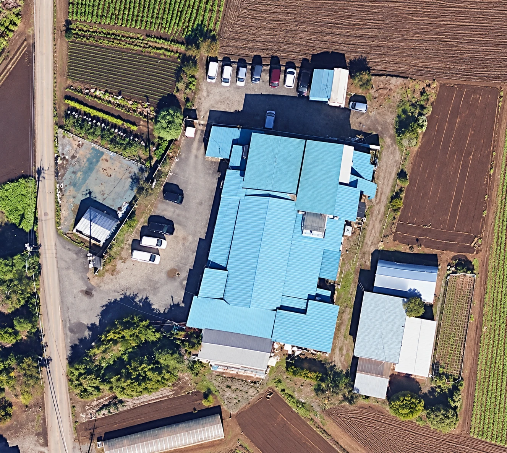

10月31日土曜日Saturday · October 31, 2026
ハロウィンイベント案内へようこそWelcome to the Halloween Event page
本当の森で、10ひきのブーハーゴーストをさがそう。森はとても広いので、ゆっくり楽しめます。A real forest adventure with ten hidden Booha Ghosts, a huge maze, and room to stay awhile.
会場への行き方How to get there
駐車場と会場への行き方Parking and the way to the event


前側駐車場FRONT LOT 奥側駐車場REAR LOT
子ども（小学生～高校生）は仮装必須Children from elementary through high school must wear costumes保護者の仮装は自由です。Parent costumes are optional.
来場・駐車場・森Arrival, parking, and the forestMaps and the walking route · 地図と歩く道
持ちものWhat to bringClothing, food, and weather · 服・食べもの・天気
安全についてSafety and accessImportant forest information · 大切な森の案内
そのあとの時間The rest of the dayStory Time and the next event are TBA · ストーリータイムなどは未定
質問がありますか？Questions?
ブライアンズ・イングリッシュ・スクールContact Bryan's English School
さがす・スキャン・ごほうび・つぎのゴーストFind · Scan · Reward · Next Target
キャンディの森Candy Forest
森の中にかくれている、10色のブーハーゴーストをさがします。家族ごとに順番がちがうので、今のターゲットだけを見てください。Find ten colored Booha Ghosts hidden in the real forest. Your family receives a different order, so show only the current target.
QRはスマホのカメラで読んでください（LINEは使わないでください）Scan the QR code with your phone's camera, not inside LINE.
イベント時間を確認中…Checking the event time…
—
ハントは日本時間10:00に始まります。The hunt opens at 10:00 Japan/Tokyo time.

かぞくのハントYour family hunt
ゴーストを見つけよう！Ready to find the ghosts?
家族またはチーム名を入力してください。この端末だけに保存され、10色の順番が作られます。Choose a family or team name. It stays on this device only. The site will create your private ten-color order when you start.
新しいハントは10:00から11:00までに始めてください。始めたハントは、見つけ終わるまで続けられます。New hunts open at 10:00 and must start by 11:00. A started hunt can continue until the family finishes or the local record expires.
0 / 10
今のターゲットYour current target
——
森でこの色のゴーストを見つけて、QRコードをスキャンしてください。Find this color in the forest, then scan its QR code.
⌁ゴーストのQRコードにスマホのカメラを向けてください。スキャンすると、つぎのターゲットが表示されます。Point your phone camera at the ghost's QR code. The scan brings you back here with your next target.
✦
キャンディの森 コンプリートCandy Forest complete
10ひき全部見つけた！All ten ghosts found!
10 / 10
この画面をブライアンに見せて、キャンディバッグをもらってください。Show this screen to Bryan to collect your candy bag.
01さがすFind森の中をさがします。
02スキャンScan今の色のQRを読みます。
03ごほうびReward短いチャイムで発見を知らせます。A short chime confirms the find.
04つぎのターゲットNext target10ひき見つけるまで続けます。
ゾンビ・スカベンジャーハントZombie Scavenger Hunt
ゾンビ・スカベンジャーハントZombie Scavenger Hunt
ライムグリーンのゴースト15ひき。暗い森。サイレン。ゾンビ。QRコードはありません。Fifteen lime-green ghosts. A dark forest. A siren. Zombies. No QR codes.
夜の時間は未定Nighttime schedule · TBA

順番に見つけるFind in order
チームでゴースト1から15までをさがします。写真が証拠になります。Teams search for Ghost 1 through Ghost 15. Photograph each ghost as proof.
テープをつけたライトUse a covered phone light
スマホのライトは使えます。ライトには紫色のテープをつけてください。ブラックライトとQRスキャンは使いません。Phone lights are allowed, but cover every active light with purple tape. No blacklights or QR scans.
サイレンでかくれるHide when the siren sounds
サイレンが鳴ったら、全員かくれてください。かくれていれば安全です。ライトや光るものを見られた人はタッチされます。When the siren sounds, everyone hides. Anyone who hides is safe; a team seen with a light or glowstick may be tagged.
病院へ戻るReturn to Hospital
洗濯ばさみを病院で外し、チーム用の光る薬を受け取ります。15番のあと、病院デスクに戻って終了です。Return to the Hospital Desk for medicine. After Ghost 15, return there to finish.
夜のイベントの詳細は、まだ計画中です。The time, final rules, and transition details will be added when confirmed.